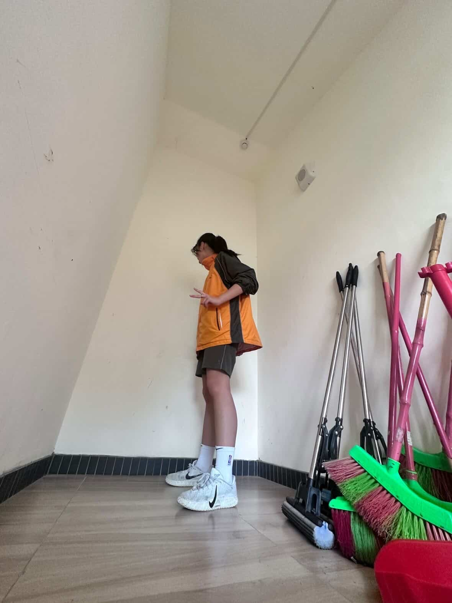
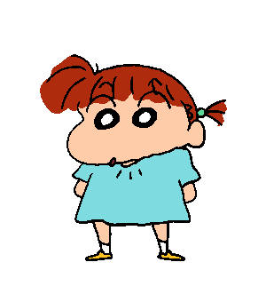
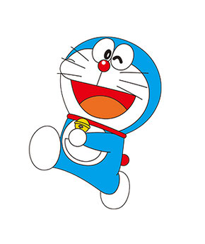

她喜歡小提琴,鋼琴,歷史,
喜歡華語JJ Lin and邱鋒澤
身高154
星座水瓶座
,愛喝珍奶,喜歡吃冰
專長和興趣;烘培
星座;金牛座
喜歡的團體;TNT
喜歡的顏色;天藍色
星座;金牛座
喜歡的團體;TNT
喜歡的顏色;天藍色
喜歡聽;K-pop
興趣; 看輕小說,漫畫,畫畫
國小;信義
血型;AB
動物;家有三隻貓
她的偶像是美秀集團
席歡的顏色黑色
喜歡看微疼
平時喜歡跟人聊天成績一般般,雖然喜歡打羽球但打得很爛,也會一點點排球
專長彈鋼琴
她喜歡香菜的食物和薄荷巧克力,她喜歡卡通三麗鷗
她是一個不認識的人很內向熟人很外向
她喜歡香菜的食物和薄荷巧克力,她喜歡卡通三麗鷗
她是一個不認識的人很內向熟人很外向
她喜歡旅行喜歡貓,狗,倉鼠
她希望長大能當老師

喜歡吃70%巧克力
喜歡大耳狗,興趣是追星
喜歡打籃球還有睡覺

她身高160公分
興趣玩黏土做些奇怪的東西

專長;打桌球,游泳
她喜歡玩遊戲,運動
,吃甜的東西
興趣;追星
她喜歡玩遊戲,運動
,吃甜的東西
興趣;追星

星座;巨蟹座
喜歡的顏色白色